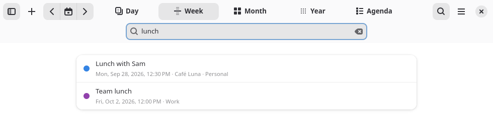

Getting Started
Navcal shows the calendars GNOME already knows about. If you use Google, Microsoft 365, Nextcloud or iCloud, add the account in Settings → Online Accounts (Navcal has a button for it in Preferences → Calendars) and its calendars appear on their own. Without an account, you can start right away with the calendar on your computer.
The window has three parts:
- The header bar, with the sidebar button, + for a new event, the arrows to go back and forward, the button for today, the views, search, and the main menu.
- The sidebar, with a small month calendar (days with events have a dot), Upcoming events for the next two weeks, your Tasks and World Clocks. Long lists show five items and a Show More button. In a narrow window the sidebar slides over the calendar instead of sitting beside it.
- The bottom bar, with a button per calendar to show or hide it, the next event and the weather now. You choose what it holds — see Bottom Bar.
Right-click anything, or long-press on a touch screen, for a menu of what you can do with it.
Views
Switch views from the header bar, or with Ctrl 1 to 5:
- Day and Week show the hours, with all-day events in a row at the top. The week can show 7, 4 or 3 days, and can leave out weekends.
- Month shows the whole month; events spanning several days stretch across them.
- Year shows twelve months, with a dot in each event’s color under the busy days. Double-click a day to open it.
- Agenda lists the coming days’ events and the tasks due each day.

Moving around
- Alt ← and Alt → go to the previous or next day, week, month or year. Ctrl T goes back to today, and Ctrl G to any date.
- Click a day in the sidebar’s month calendar to go there.
- In the day and week views, zoom the hours in and out by pinching, by scrolling with Ctrl held, or with Ctrl + and Ctrl −. Ctrl 0 resets the zoom.
New Events
Press Ctrl N or the + button and type the event the way you’d say it. The line under the text shows what Navcal understood; press Enter to add it, or Edit Details… to open the full editor first.
| You type | You get |
|---|---|
| Lunch with Sam tomorrow 1pm at Café Luna | Tomorrow, 1:00–2:00 PM, at Café Luna |
| Dentist sep 30 8:30am for 45 min | September 30, 8:30–9:15 AM |
| Workshop 14:00-16:30 tomorrow at Main Office | Tomorrow, 2:00–4:30 PM, at Main Office |
| Night shift friday 10pm-6am | This Friday at 10 PM until 6 AM on Saturday |
| Book club next friday 7:30pm | The Friday of next week, 7:30–8:30 PM |
| Call Mom in 3 days evening | Three days from now, 6:00–7:00 PM |
| Conference oct 12 all day | October 12, all day |
| Standup every weekday 9am for 15 min | 9:00–9:15 AM, Monday to Friday |
| Yoga every monday and thursday 6pm | 6:00–7:00 PM every Monday and Thursday |
| Team retro every other week friday 3pm | 3:00–4:00 PM on Fridays, every two weeks |
| Mia’s birthday dec 3 every year | December 3, all day, every year |
Quick add understands English phrasing:
- Dates: today, tomorrow, a weekday (“friday” is the coming one, “next friday” the one after), sep 30, 30 september, 9/30, in 3 days.
- Times: 1pm, 13:00, noon, midnight, 1-2pm, from 9 to 11am, and morning, afternoon, evening or tonight.
- Lengths: for 2 hours, for 45 min, all day. Without one, events last an hour (or the length set in Preferences).
- Repeats: every day, every weekday, every monday and thursday, weekly, monthly, yearly, every other week.
- Places: “@ Room 4”, or “at” followed by a name that starts with a capital letter.
You can also double-click a day or a time, or drag across the hours in the day and week views, to make an event right there.
The event editor
Double-click an event, or select it and press Enter, to open the editor. Besides the title, time and calendar, it has:
- Location, with address suggestions as you type, a button to show it on a map, the forecast there and opening hours — see Places and Weather.
- Repeat rules — see Repeating Events.
- Reminders, as many as you like.
- Travel time: pick a length, or Custom… for any number of minutes.
- Time zone, when the event happens somewhere else. The editor shows the time there and your own time.
- Links and files attached to the event, and notes.
- A warning when the event overlaps another one.
Changing Events
| To | Do this |
|---|---|
| Move | Drag the event to another time or day, in any view. |
| Change the length | Drag the bottom edge of the event in the day or week view. |
| Make all-day, or give it a time | Drag it between the all-day row and the hours. |
| Duplicate | Hold Ctrl while dragging, or press Ctrl D. |
| Select several | Ctrl or Shift and click. Ctrl A selects all you can see; Esc clears. |
| Copy, cut and paste | Ctrl C or Ctrl X, click a day or a time, then Ctrl V. Several events keep their spacing. |
| Delete | Delete. A message offers Undo. |
| Undo and redo | Ctrl Z and Ctrl Shift Z: your last 50 changes, even after restarting. |

While dragging, press or let go of Ctrl to switch between moving and copying.
Repeating Events
In the editor, Repeat can be:
- every so many days, weeks, months or years;
- on chosen weekdays, like Monday, Wednesday and Friday;
- monthly on a day number, on “the second Tuesday”, or on “the last Friday”;
- forever, until a date, or a number of times.
When you change or delete one occurrence, Navcal asks whether it’s for only this event, this and the following, or all of them. Rules made in other apps that the editor can’t show are kept as they are.
Reminders
Reminders are desktop notifications with a Snooze 5 Minutes button. They include reminders set in other apps, such as a calendar on your phone. Reminders that came due while Navcal wasn’t running are shown as missed the next time it starts, up to two days back.
With travel time set, the time before the event is shaded in the day and week views, and a “Time to Leave” notification tells you when to go. It’s saved the same way Apple Calendar saves it, so it also shows on iPhones and Macs.
Running in the background
Closing the window (Ctrl W) keeps Navcal running, hidden, so reminders still arrive; opening it again brings the window back. Ctrl Q quits. In Preferences:
- Run in background: turn off to make closing the window quit Navcal.
- Start at login: starts Navcal hidden when you log in, so reminders come from the start.
If GNOME’s own reminder service is running, Navcal leaves reminders to it, so you don’t get each one twice.
Places and Weather
Set your place in Preferences → Weather and Places. The forecast for about the next two weeks then shows under each date in the day, week and month views, with the day’s high and low, in °C or °F as you prefer.
Events with a location get the forecast for when they start. When the location is a business — a café, a shop, a museum, a pharmacy — the editor says what it found and whether it’s open then. If it’s closed, or closes before the event ends, a warning sign shows on the event.

- Pick a place from the suggestions while typing to be sure it’s the right one. It’s then saved with the event, so the next lookup doesn’t have to guess.
- A location typed by hand is matched to the nearest place with that name — near your weather place, or else your time zone’s city.
- Locations such as “Office”, “Zoom” or “Online”, web links and phone numbers are never looked up.
- Opening hours come from OpenStreetMap, and not every place lists them yet.
These lookups need the internet: suggestions and opening hours come from OpenStreetMap, forecasts from Open-Meteo, and the locations you type are sent to them. Turn off Look up places and weather online to keep everything on your computer.
Tasks
The sidebar lists your tasks with a check box each, from the same task lists GNOME’s task apps and Nextcloud or Google Tasks use. Type in New task to add one — it understands due dates too, like “Buy milk tomorrow” or “Call Sam 5pm”. Click a task to change its due date, list or notes. Tasks due on a day also show in the Agenda view, next to that day’s events.
World Clocks and Time Zones
Add cities under World Clocks in the sidebar to see their time and how far ahead or behind they are. In Preferences, you can also show a second time zone next to the hours in the day and week views.
Each event can have its own time zone. It shows at the right time wherever you are, daylight saving included.
Search
Press Ctrl F, or just start typing, to find events by title, location or notes. Upcoming events come first, then past ones. Click a result to go to it.

Your events also show up when you search in GNOME’s Activities overview. With the Flatpak this works right away.
Bottom Bar
The bar at the bottom of the window works like a dock. In Preferences → Bottom Bar, or with Customize Bottom Bar… in its menu, choose what it shows and in what order:
- a button per calendar to show or hide it;
- the next event, how many tasks are due today, the weather now and your world clocks;
- New Event, Today, Search, Go to Date and Print buttons.

When the bar is full, it scrolls sideways.
Printing
Ctrl P opens a preview of the page as it will print. Choose:
- what to show: a calendar, an agenda, or both;
- where the calendar goes next to the agenda: left, right, above or below;
- the period: a day, a week or a month (it starts with the view you’re in);
- portrait or landscape, check boxes to tick off in the agenda, and event colors.

The calendar is a timeline for a day, a planner for a week and a grid for a month. A long agenda carries on over more pages. Print… opens the system’s print dialog, where you can also save a PDF; Save as Image… saves a PNG, as tall as it needs to be.
Managing Calendars
Preferences → Calendars (Ctrl ,) lists every calendar by account. There you can:
- change a calendar’s color, and show or hide it — this also applies to GNOME Calendar and the top bar;
- create a calendar on this computer, or remove one;
- subscribe to a calendar link (webcal or https .ics);
- Add Public Holidays… for your country, with no account needed;
- open Online Accounts to add Google, Microsoft 365, Nextcloud or iCloud.
Events take their calendar’s color, unless you pick one for an event. Birthdays from your contacts, holidays and subscriptions are read-only.
Import, export and backups
Import Events… and Export Events… read and write standard .ics files, which other calendar apps understand. Exporting “All calendars” is a full backup, and importing it brings everything back. Importing takes seconds even for thousands of events, and importing the same file again updates the events it added the first time instead of adding them twice.
Preferences
Preferences (Ctrl ,) apply right away:
| Section | Settings |
|---|---|
| New Events | Default reminder and default length. |
| Calendar View | First day of the week; 7, 4 or 3 days in the week view; hiding weekends; week numbers; a second time zone. |
| Weather and Places | Looking things up online, showing the weather, your place, and °C or °F. |
| Working Hours | Shade the time outside them in the day and week views, with their start and end. |
| Background | Run in background and start at login. |
| Bottom Bar | Showing the bar, and what’s in it. |
| Calendars | Everything under Managing Calendars. |
Keyboard Shortcuts
Press Ctrl ? in Navcal to see these at any time.
| General | Keys |
|---|---|
| Show keyboard shortcuts | Ctrl ? |
| Preferences | Ctrl , |
| Open main menu | F10 |
| Search | Ctrl F |
| Ctrl P | |
| Close window | Ctrl W |
| Quit | Ctrl Q |
| Navigation | Keys |
|---|---|
| Go to today | Ctrl T |
| Go to date | Ctrl G |
| Previous period | Alt ← |
| Next period | Alt → |
| Day view | Ctrl 1 |
| Week view | Ctrl 2 |
| Month view | Ctrl 3 |
| Year view | Ctrl 4 |
| Agenda view | Ctrl 5 |
| Move between days or times | ← → ↑ ↓ |
| Select the next or previous event | Space / Shift Space |
| Zoom in on the hours | Ctrl + |
| Zoom out | Ctrl − |
| Reset zoom | Ctrl 0 |
| Events | Keys |
|---|---|
| New event | Ctrl N |
| Open the selected event, or create one | Enter |
| Select more events | Ctrl and click |
| Select all visible events | Ctrl A |
| Clear the selection | Esc |
| Copy | Ctrl C |
| Cut | Ctrl X |
| Paste | Ctrl V |
| Duplicate | Ctrl D |
| Duplicate by dragging | Ctrl and drag |
| Delete | Delete |
| Undo | Ctrl Z |
| Redo | Ctrl Shift Z |
No shortcut matches that.
Accessibility
Everything in Navcal works from the keyboard. The calendar views describe themselves to screen readers: each day is a list of its events, and moving with the arrow keys reads out the day, the time or the event. Navcal follows your system’s text size, high contrast, light or dark style and accent color.
If something doesn’t work for you, that’s a bug worth reporting on the issue tracker.